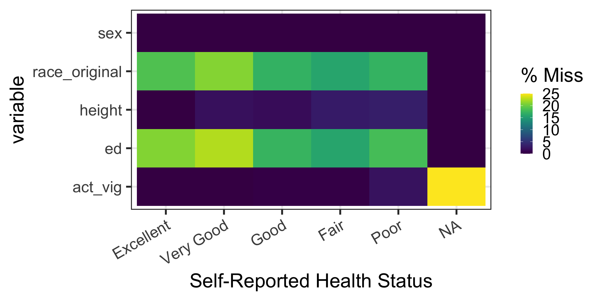

hrs_00 <- hrs_data |>
select(ed, race_original, srh, sex, act_vig, height)Missing data: summarization and visualization
Missing data summary and visualization
Before we start
- Install and load the
naniarpackage (a play on Narnia) if you haven’t already!
- We’ll be working with only a few variables in the HRS dataset in this lesson!
- Mostly to help us view the tables and plots within the slides
Why summarize and visualize missingness before doing anything else?
- Before you transform, model, or plot a variable, you need to know how much of it is actually there
Missing data can be a problem for many reasons
- It can reduce your sample size (and therefor your ability to make conclusions)
- It can bias your results if there’s a pattern to missingness
- It can make your plots look weird or misleading
A quick missingness check can reveal
- Which variables have the most missing data
- Whether missingness is scattered or clustered
- Whether missingness looks related to another variable (which matters for how you handle it later)
Missingness statistics
Missing values in a dataset
n_miss()fromnaniarcounts the total number of missing values across an entire dataset
n_miss(hrs_00)[1] 1061- This is the total count of
NAcells across every column combined n_complete()is the complement ofn_miss()- It counts the total number of non-missing values across the dataset
prop_miss()gives the proportion of all cells in the dataset that are missing
prop_miss(hrs_00)[1] 0.0648216- Useful as a single, high-level number to report on the overall proportion missingness of your dataset
Missing values in a single variable
- We can use
n_miss()to count the number of missing values in a single variable
n_miss(hrs_00$srh)[1] 4- This is the count of
NAcells in self-reported health
- We can also use
prop_miss()to get the proportion of missing values in a single variable
prop_miss(hrs_00$srh)[1] 0.001466276- This is the proportion of
NAcells in self-reported health
Missingness by each variable, for every variable
miss_var_summary()gives one row per variable, with the count and percent missing- Piping the result into
gt()makes it a nicer table to read
hrs_00 |>
miss_var_summary() |>
gt() |>
tab_options(table.font.size = px(40))| variable | n_miss | pct_miss |
|---|---|---|
| ed | 507 | 18.6 |
| race_original | 486 | 17.8 |
| height | 55 | 2.02 |
| act_vig | 9 | 0.330 |
| srh | 4 | 0.147 |
| sex | 0 | 0 |
- The output is sorted from most to least missing, which makes it easy to spot the variables with the most missing data
Visualizing missing data
vis_miss(): visualizing missing data across the dataset
- This plot helps identify whether:
- There are variables with a lot of missing values (in columns of plot)
- Observations with a lot of missing values (in rows of plot)

gg_miss_fct(): missingness heatmap by group
- This plot is useful for comparing missingness rates stratified by a variable
- Potentially detect patterns in missingness
- Specify the variable to stratify by in the
fct =option ofgg_miss_fct()- Each column (x-axis) is a different level of the stratifying variable
- Each row (y-axis) is a different variable in the dataset
Example: percent missingness stratified by srh (self-reported health)
- 1
-
gg_miss_fct()is a function that produces a heatmap of missingness stratified by a factor variable. We are stratifying by self-reported health (srh) in this example - 2
- I’m changing the background and font size to make the plot easier to read
- 3
- I’m rotating the x-axis labels to make them easier to read

gg_miss_upset(): missingness intersections (1/2)
gg_miss_upset()shows the most common combinations (sets) of missing variables
- 1
-
gg_miss_upset()is a function that produces an UpSet plot of missingness intersections - 2
-
nsets = 10limits the plot to the 10 largest combinations of co-missing variables, which keeps the plot readable - 3
-
text.scale = 3increases the size of the text in the plot, which makes it easier to read
Warning: `aes_string()` was deprecated in ggplot2 3.0.0.
ℹ Please use tidy evaluation idioms with `aes()`.
ℹ See also `vignette("ggplot2-in-packages")` for more information.
ℹ The deprecated feature was likely used in the UpSetR package.
Please report the issue at <https://github.com/hms-dbmi/UpSetR/issues>.Warning: Using `size` aesthetic for lines was deprecated in ggplot2 3.4.0.
ℹ Please use `linewidth` instead.
ℹ The deprecated feature was likely used in the UpSetR package.
Please report the issue at <https://github.com/hms-dbmi/UpSetR/issues>.Warning: The `size` argument of `element_line()` is deprecated as of ggplot2 3.4.0.
ℹ Please use the `linewidth` argument instead.
ℹ The deprecated feature was likely used in the UpSetR package.
Please report the issue at <https://github.com/hms-dbmi/UpSetR/issues>.
gg_miss_upset(): missingness intersections (2/2)
gg_miss_upset()shows the most common combinations (sets) of missing variables
- 1
-
gg_miss_upset()is a function that produces an UpSet plot of missingness intersections - 2
-
nsets = 10limits the plot to the 10 largest combinations of co-missing variables, which keeps the plot readable - 3
-
text.scale = 3increases the size of the text in the plot, which makes it easier to read
- Main bar plot: ordered by the number of observations with specific set of missing variables
- Bottom dots with lines: combination of variables missing
- Bottom, sideways barplot: number of observations missing for each variable, regardless of combination

gg_miss_upset(): What am I taking away from this plot?

- The most common combination of missing variables is
race_originalandedwith 465 observations- There are not many observations that have one of these missing without the other
- There’s 36 (34 + 2) observations that have
edmissing but notrace_original - There’s 15 (12 + 3) observations that have
race_originalmissing but noted
- Height seems to be mostly missing on its own
- 46 out of the 55 observations with height missing have no other variables missing
Wrap-up
Wrap-up
- We learned a few functions within
naniarthat help us summarize and visualize missingness in a dataset
n_miss()andprop_miss()give quick, high-level counts of missingness across a whole datasetmiss_var_summary()gives a tidy, sortable summary of missingness by variablevis_miss()gives a bird’s-eye view of missingness across every row and columngg_miss_fct()compares missingness rates across groupsgg_miss_upset()reveals which variables tend to be missing together